PolSAM: Polarimetric Scattering Mechanism Informed Segment Anything Model
1Northwestern Polytechnical University
2Peking University
3Chinese Academy of Sciences
4Chongqing University of Posts and Telecommunications
† Corresponding authors
IEEE Transactions on Circuits and Systems for Video Technology (TCSVT), 2026
Abstract
PolSAR data presents unique challenges due to its rich and complex characteristics. Existing representations often face issues related to usability, interpretability, and data integrity, while the application of vision foundation models is hindered by modality differences and limited domain knowledge. We propose PolSAM, a polarimetric scattering mechanism informed Segment Anything Model. Central to our approach is Microwave Vision Data (MVD), which distills complex scattering mechanisms into a lightweight, physically interpretable format. A Feature-Level Fusion Prompt module and specialized adapters integrate MVD into the frozen SAM encoder. A progressive Semantic-Level Fusion Prompt module generates sparse and dense prompt embeddings from MVD’s semantic correlations. Experiments on the newly constructed PhySAR-Seg datasets demonstrate the effectiveness of this physically informed approach.
Method
A lightweight physical representation. Feature-level alignment. Progressive semantic prompting.
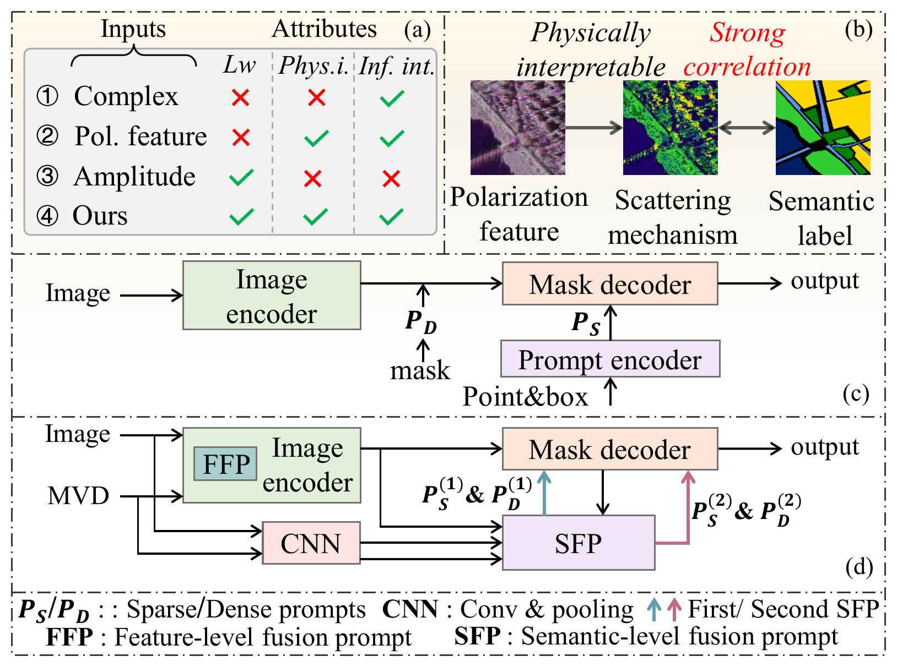
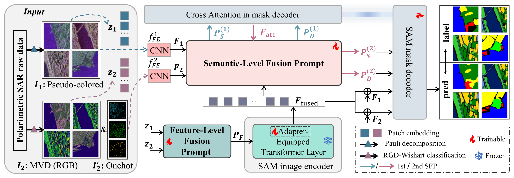
PolSAM integrates Microwave Vision Data (MVD) and pseudo-colored SAR imagery through a Feature-Level Fusion Prompt (FFP) module and specialized adapters in the frozen SAM encoder. A progressive Semantic-Level Fusion Prompt (SFP) module generates sparse and dense embeddings, then refines them using class-aware information.
Feature-level and semantic-level fusion modules
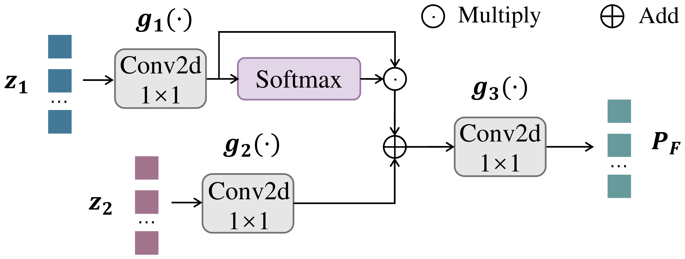
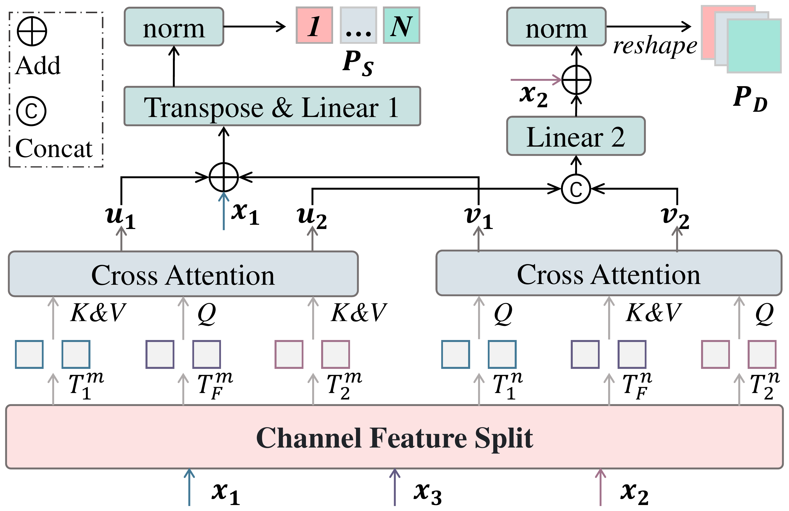
Results
PolSAM achieves 73.55% and 46.55% mIoU on PhySAR-Seg-1 and PhySAR-Seg-2, respectively.
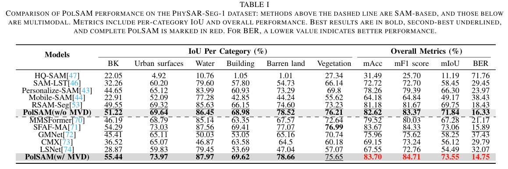
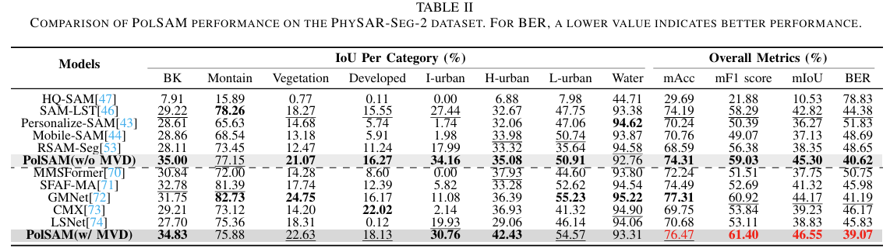
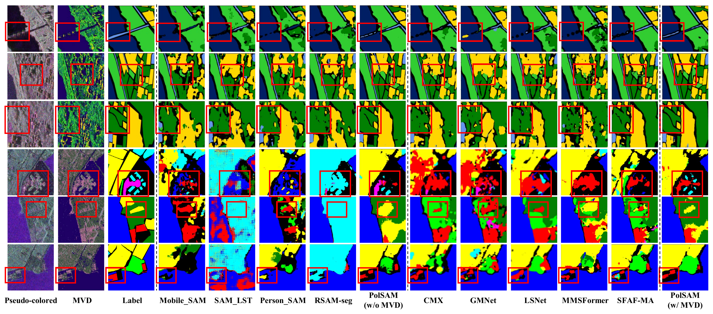
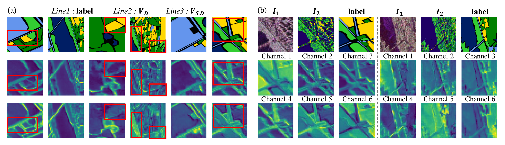
Additional visualizations and ablation studies
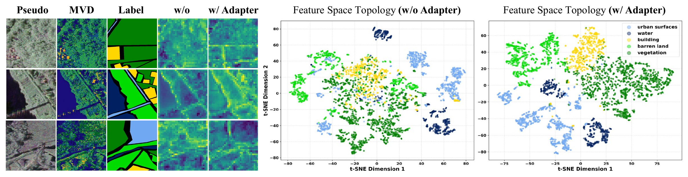
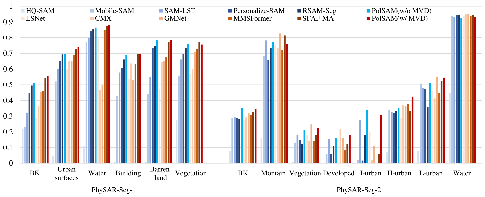
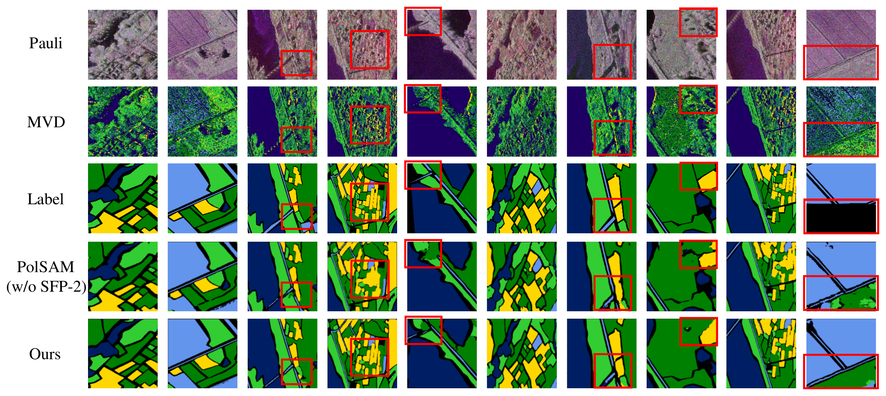
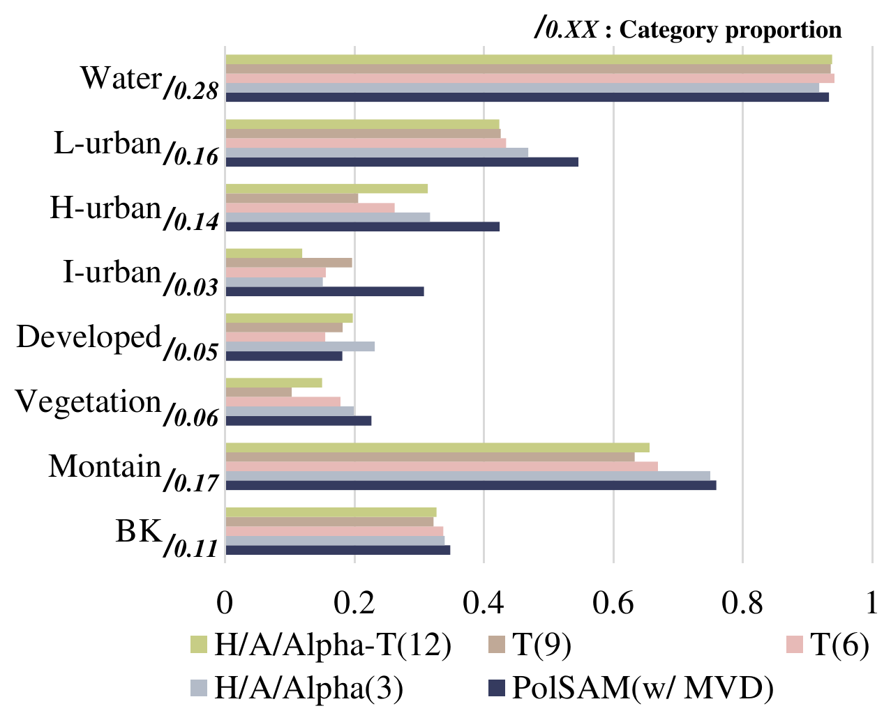
PhySAR-Seg Datasets
Paired pseudo-colored SAR images, Microwave Vision Data, and pixel-level semantic labels.
PhySAR-Seg-1
Multi-band airborne imagery (L / S / C / X). 2,866 tiles at 512 × 512 pixels, with five land-cover classes plus background. Train / validation / test = 6:2:2; corresponding geographic regions across bands share the same split.
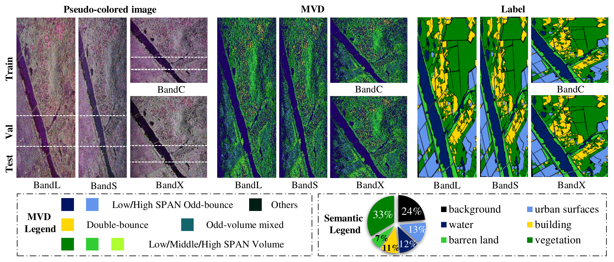
PhySAR-Seg-2
Spaceborne C-band imagery. 1,110 tiles at 512 × 512 pixels, with seven land-cover classes plus background. The benchmark uses 668 training and 442 validation tiles, after removing pure-water tiles.
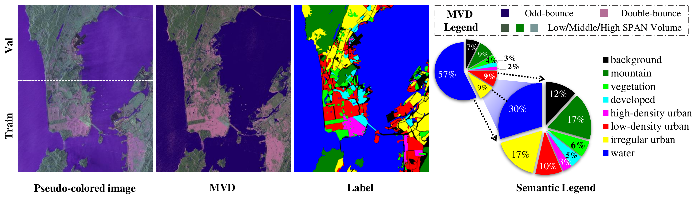
Download PhySAR-Seg-2 ↗Extraction code: Quan
Data processing pipeline
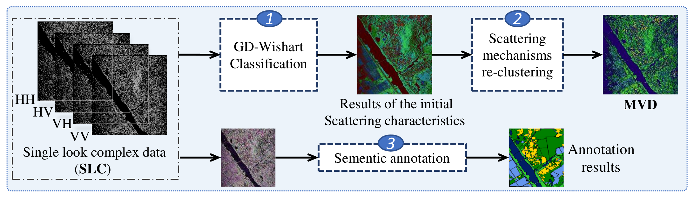
BibTeX
@article{wang2026polsam,
title = {PolSAM: Polarimetric Scattering Mechanism Informed Segment Anything Model},
author = {Wang, Yuqing and Huang, Zhongling and Yang, Shuxin and Tang, Hao and Qiu, Xiaolan and Han, Junwei and Zhang, Dingwen},
journal = {IEEE Transactions on Circuits and Systems for Video Technology},
year = {2026},
doi = {10.1109/TCSVT.2026.3738868}
}